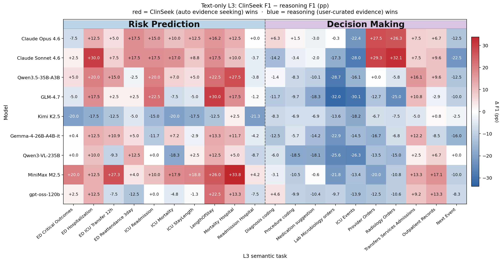

Generated 2026-05-01. We compare two pipelines against every model: ClinSeek, our proposed clinical evidence-seeking agent (multi-turn MCP tool calls over the raw EHR, with browser + CXR image tools on MM) vs Reasoning (single-turn prompt with the EHR timeline pre-rendered by a deterministic rule-based extractor). Scoring is identical across modes. Tongyi DeepResearch 30B is excluded (very weak). Gemma-4 MM reasoning uses the corrected (Letian2003/fh37931, 2026-05-01) re-run.
Across 1,800 text-only task rows, ClinSeek beats the rule-based user-curated reasoning baseline only when the host model has strong enough agentic capability (Claude Opus 4.6). Every weaker host model underperforms its own reasoning baseline in overall F1. ClinSeek's utility scales with the host's agentic capability, not with raw model knowledge.
| Model | risk_prediction (n=720) | decision_making (n=1080) | overall (n=1800) | ||||||
|---|---|---|---|---|---|---|---|---|---|
| ClinSeek | Reasoning | Δ (ClinSeek − Rsn) | ClinSeek | Reasoning | Δ (ClinSeek − Rsn) | ClinSeek | Reasoning | Δ (ClinSeek − Rsn) | |
| Claude Opus 4.6 | 90.7 | 81.0 | +9.7 | 44.8 | 45.9 | -1.1 | 63.2 | 60.0 | +3.2 |
| Claude Sonnet 4.6 | 90.0 | 77.5 | +12.5 | 35.9 | 42.6 | -6.8 | 57.5 | 56.6 | +0.9 |
| EHR-R1-72B | — | 67.1 | — | — | 45.2 | — | — | 53.9 | — |
| GLM-4.7 | 75.1 | 70.4 | +4.7 | 23.1 | 38.6 | -15.5 | 43.9 | 51.3 | -7.4 |
| Qwen3.5-35B-A3B | 84.4 | 73.6 | +10.8 | 22.0 | 29.0 | -7.0 | 47.0 | 46.8 | +0.1 |
| Gemma-4-26B-A4B-it | 83.5 | 78.6 | +4.9 | 17.3 | 27.8 | -10.5 | 43.8 | 48.1 | -4.3 |
| MiniMax M2.5 | 86.7 | 68.4 | +18.3 | 21.0 | 26.3 | -5.3 | 47.3 | 43.1 | +4.2 |
| Kimi K2.5 | 65.0 | 79.9 | -14.9 | 19.8 | 28.8 | -9.1 | 37.9 | 49.2 | -11.4 |
| Qwen3-VL-235B | 67.9 | 71.0 | -3.1 | 19.1 | 33.4 | -14.3 | 38.6 | 48.4 | -9.8 |
| gpt-oss-120b | 75.4 | 74.0 | +1.4 | 16.6 | 22.3 | -5.7 | 40.1 | 43.0 | -2.9 |
| MedGemma-27B-it | — | 65.0 | — | — | 25.2 | — | — | 41.1 | — |
| EHR-R1-8B | — | 64.0 | — | — | 23.4 | — | — | 39.7 | — |
Mortality_Hospital, LengthOfStay,
ED_HospitalizationThe L3 delta grid below groups 20 text-only semantic tasks under the two L2 bands (■ risk_prediction, ■ decision_making). The risk-prediction band is visibly dominated by red (ClinSeek wins).

cases/case1_lengthofstay/
— LengthOfStay_3day, post-partum; ClinSeek recovers DRG-806 + day-4 prescription stop-times.cases/case4_inpatient_mortality/
— Inpatient mortality; ClinSeek pulls late-timeline evidence the reasoning prompt doesn't surface.cases/case5_ed_hospitalization/
— ED hospitalization; ClinSeek finds the discharge-home signal.LengthOfStay_3day — will hospital stay exceed 3 days?
(qid=ehr_bench_risk_prediction_6017, 91 y.o. female, post-partum)run_sql_query("SELECT * FROM drgcodes WHERE hadm_id = 25254375"),
recovered DRG-806 "Vaginal delivery W/O sterilization/D&C WITH CC" plus prescription stop-times
extending to day 4. The reasoning-mode prompt exposes admissions,
transfers, prescriptions, procedures_icd, and
services but not drgcodes or diagnoses_icd.
The missing DRG directly encodes stay-length expectation and was unavailable to reasoning-mode.
| Model | CXR: finding presence | CXR: finding enumeration | CXR: change comparison | Mortality (24 h) | Inpatient mortality | Phenotype (CCS groups) | Multimodal overall | ||||||||||||||
|---|---|---|---|---|---|---|---|---|---|---|---|---|---|---|---|---|---|---|---|---|---|
| ClinSeek | Reasoning | Δ | ClinSeek | Reasoning | Δ | ClinSeek | Reasoning | Δ | ClinSeek | Reasoning | Δ | ClinSeek | Reasoning | Δ | ClinSeek | Reasoning | Δ | ClinSeek | Reasoning | Δ | |
| n | 177 | 220 | 222 | 125 | 125 | 120 | 989 | ||||||||||||||
| Claude Opus 4.6 | 78.3 | 55.2 | +23.2 | 43.6 | 31.6 | +12.0 | 54.8 | 38.0 | +16.7 | 92.0 | 93.6 | -1.6 | 74.4 | 69.6 | +4.8 | 45.5 | 11.5 | +34.0 | 62.6 | 47.5 | +15.1 |
| Claude Sonnet 4.6 | 79.5 | 64.8 | +14.7 | 41.3 | 29.7 | +11.6 | 51.5 | 34.7 | +16.8 | 64.0 | 90.4 | -26.4 | 68.8 | 70.4 | -1.6 | 26.1 | 13.8 | +12.3 | 54.9 | 48.0 | +6.9 |
| GLM-4.7 | 73.3 | — | — | 33.0 | — | — | 40.6 | — | — | 88.8 | — | — | 72.8 | — | — | 3.2 | — | — | 50.4 | — | — |
| Qwen3.5-35B-A3B | 73.8 | 59.1 | +14.7 | 34.2 | 34.1 | +0.1 | 44.4 | 30.7 | +13.7 | 91.2 | 90.4 | +0.8 | 74.4 | 81.6 | -7.2 | 0.3 | 0.5 | -0.2 | 51.7 | 46.9 | +4.9 |
| Kimi K2.5 | 61.4 | 56.3 | +5.1 | 34.9 | 24.7 | +10.2 | 43.8 | 35.0 | +8.7 | 71.2 | 91.2 | -20.0 | 62.4 | 87.2 | -24.8 | 12.3 | 12.4 | -0.1 | 46.9 | 47.5 | -0.5 |
| MiniMax M2.5 | 73.6 | — | — | 37.8 | — | — | 47.3 | — | — | 52.0 | — | — | 56.0 | — | — | 10.7 | — | — | 47.1 | — | — |
| Qwen3-VL-235B | 70.4 | 60.3 | +10.2 | 35.7 | 21.1 | +14.6 | 47.8 | 32.8 | +15.0 | 79.2 | 87.2 | -8.0 | 61.6 | 72.8 | -11.2 | 6.0 | 6.6 | -0.6 | 49.8 | 43.9 | +5.9 |
| Gemma-4-26B-A4B-it | 78.9 | 56.9 | +22.0 | 21.6 | 21.4 | +0.2 | 38.4 | 25.4 | +13.0 | 65.6 | 79.2 | -13.6 | 71.2 | 60.0 | +11.2 | 0.4 | 0.0 | +0.4 | 44.9 | 38.2 | +6.6 |
The table below lists multimodal-overall F1 for every host that has both paradigms, sorted by ClinSeek lift (largest first). Contrast this with §1: on text-only tasks, ClinSeek only helps the strongest host; but on the multimodal tasks it helps essentially every host, and the magnitude of the lift correlates with host agentic capability.
| Host model | ClinSeek F1 | Reasoning F1 | Δ ClinSeek lift (pp) |
|---|---|---|---|
| Claude Opus 4.6 | 62.6 | 47.5 | +15.1 |
| Claude Sonnet 4.6 | 54.9 | 48.0 | +6.9 |
| Gemma-4-26B-A4B-it | 44.9 | 38.2 | +6.6 |
| Qwen3-VL-235B | 49.8 | 43.9 | +5.9 |
| Qwen3.5-35B-A3B | 51.7 | 46.9 | +4.9 |
| Kimi K2.5 | 46.9 | 47.5 | -0.5 |
cases/case2_mm_phenotyping/
— Phenotyping (35 y.o. ICU); CXR classifier + taxonomy lookup → F1 0.83.cases/case6_mm_decompensation/
— 24-h decompensation; ClinSeek picks 'no' from ICU-events stabilization.cases/case7_mm_mortality/
— In-hospital mortality; ClinSeek captures the recovery trajectory.Each MM case markdown embeds the linked chest-X-ray image
directly alongside it in cases/<slug>/.
medmod_phenotyping
(qid=medmod_phenotyping_test_38131454_130.604444, 35 y.o. ICU patient)image.chest_xray_classifier (Effusion 0.71,
Lung Opacity 0.83, Consolidation 0.62), 1 image.chest_xray_report_generator, 45 SQL
queries over the events table, and 11 browser calls that recovered the full
25-phenotype taxonomy. Reasoning-mode had none of this.
The paradigm gap is task-family-specific. A 35 B ClinSeek run exceeds a 72 B domain-tuned reasoning run on risk_prediction, but the sign flips on decision_making:
| Run | risk_prediction F1 | decision_making F1 | overall F1 |
|---|---|---|---|
| Qwen3.5-35B-A3B + ClinSeek | 84.4 | 22.0 | 47.0 |
| EHR-R1-72B (reasoning only) | 67.1 | 45.2 | 53.9 |
| Δ (Qwen-ClinSeek − EHR-R1-Rsn) | +17.4 | -23.2 | -7.0 |
Next_Event, ICU_Events,
Lab_Microbiology_orders, and Medication_suggestion| Model | Next_Event | ICU_Events | Lab_Microbiology_orders | Medication_suggestion | ||||||||
|---|---|---|---|---|---|---|---|---|---|---|---|---|
| Ag | Rsn | Δ | Ag | Rsn | Δ | Ag | Rsn | Δ | Ag | Rsn | Δ | |
| Claude Opus 4.6 | 10.0 | 22.5 | -12.5 | 41.2 | 63.7 | -22.4 | 58.9 | 59.2 | -0.3 | 43.4 | 46.3 | -3.0 |
| Claude Sonnet 4.6 | 5.0 | 27.5 | -22.5 | 34.3 | 62.3 | -28.0 | 40.6 | 57.9 | -17.3 | 40.2 | 42.2 | -2.0 |
| Qwen3.5-35B-A3B | 2.5 | 15.0 | -12.5 | 27.8 | 43.9 | -16.1 | 4.4 | 33.1 | -28.7 | 20.7 | 30.9 | -10.1 |
| GLM-4.7 | 5.0 | 15.0 | -10.0 | 26.8 | 56.9 | -30.1 | 14.1 | 46.1 | -32.0 | 25.6 | 43.9 | -18.3 |
| Kimi K2.5 | 7.5 | 10.0 | -2.5 | 23.1 | 41.4 | -18.2 | 8.3 | 22.0 | -13.6 | 21.9 | 28.7 | -6.9 |
| Gemma-4-26B-A4B-it | 5.0 | 21.0 | -16.0 | 21.2 | 35.7 | -14.5 | 10.0 | 32.9 | -22.9 | 11.6 | 25.8 | -14.2 |
| Qwen3-VL-235B | 12.5 | 12.5 | +0.0 | 19.8 | 46.0 | -26.3 | 5.1 | 30.7 | -25.6 | 15.9 | 34.0 | -18.1 |
| MiniMax M2.5 | 7.5 | 17.5 | -10.0 | 25.7 | 39.1 | -13.4 | 8.2 | 30.1 | -21.8 | 21.0 | 21.6 | -0.6 |
| gpt-oss-120b | 5.0 | 13.3 | -8.3 | 18.7 | 32.6 | -13.9 | 3.9 | 13.6 | -9.7 | 14.1 | 24.5 | -10.4 |
cases/case3_pyxis/
— Pyxis next-dispense; 66 calls → wrong metronidazole choice.cases/case8_labevents/
— Labevents next-order; ClinSeek commits to one lab vs reasoning's ~40-lab enumeration.cases/case9_next_event/
— Next_event; 39 calls exploring admissions/transfers instead of radiology.pyxis
(qid=ehr_bench_decision_making_11698, 91 y.o. male, ED abdominal distention)table1_ehr_L2.html — standalone text-only L2 tabletable3_mm_L4_multimodal.html — standalone multimodal L4 tableimages/fig_ehrbench_L3_delta.png — text-only L3 delta heatmapdata/table1_ehr_L2.csv — raw numbers behind Table 1data/fig_ehrbench_L3_delta.csv — raw numbers behind the heatmap (long format)data/table3_mm_L4_multimodal.csv — raw numbers behind Table 3data/mm_overall_lift.csv — per-host MM overall lift (§2.2)data/ehrbench_decision_losers.csv — 4 decision-making L3s where every host loses (§3.3)cases/<slug>/ — one subfolder per case study with
case.md, raw trajectory.md, reasoning.md,
vital_analysis.json, and any linked CXR images.
See cases/README.md for details.scripts/build_report.py — regenerator (tables + figure + CSVs + cases + HTML)scripts/plot_fig_from_csv.py — regenerate the heatmap from data/fig_ehrbench_L3_delta.csv alonescripts/analyze_trajectory.py — Claude Opus 4.6 vital-call analyzerscripts/_dump_trajectories.py — trajectory + CXR asset dumperscripts/_run_analyzer.sh — batch analyzer launcher